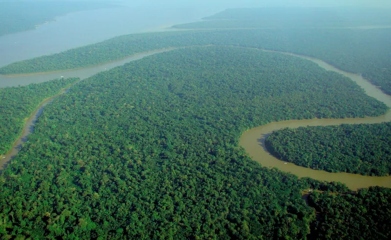
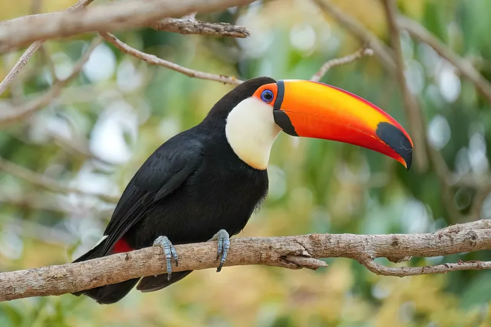
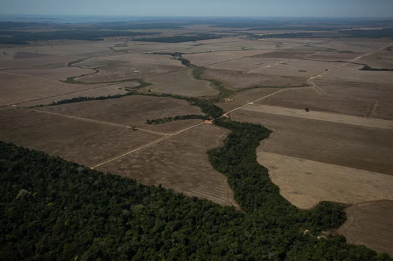
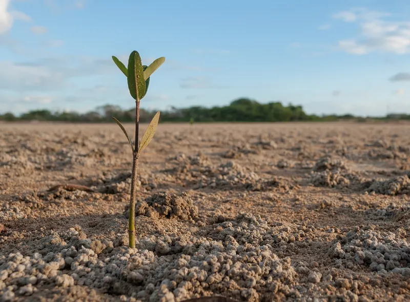

Interaktív térkép
Hol vannak a világ esőerdei? Fedezd fel őket egy kattintható világtérképen.
Fedezd fel az esőerdők világát, és tudd meg, hogyan segíthetsz nekik!

Az esőerdők sűrű, örökzöld erdők, ahol egész évben bőséges eső hullik. A legtöbbjük a trópusokon, az Egyenlítő mentén található, de hűvösebb, mérsékelt övi esőerdők is léteznek, például Észak-Amerika nyugati partvidékén.
Bár a szárazföldeknek csak nagyjából 6%-át borítják, a Föld növény- és állatfajainak több mint fele itt él. Számos mindennapi termékünk is innen származik: a kakaó, a banán, a kávé és sok gyógyszer hatóanyaga is esőerdei növényekből ered.
Az esőerdők a bolygó éghajlatának fontos szabályozói: fáik hatalmas mennyiségű szenet tárolnak, ezért lassítják a felmelegedést. A fák által elpárologtatott víz felhőket képez, amelyek több ezer kilométerre is eljuttatják az esőt. Emellett sok millió embernek, köztük számos őslakos népnek adnak otthont és megélhetést.
A párás levegőben a fatörzseket vastagon borítja a moha és a páfrány.

A hegyvidéki esőerdőket gyakran köd és felhő borítja, a fák a levegőből is nedvességet kapnak.

Felülről nézve az Amazonas erdeje végtelen zöld szőnyegnek látszik.
Fotó: lubasi, CC BY-SA 2.0, Wikimedia Commons (módosítva)

Az esőerdőt folyók ezrei szövik át; a víz színét az határozza meg, mit mos bele az erdő.

Tukánok, papagájok és békák: az esőerdő a színek birodalma.
Fotó: Giles Laurent, CC BY-SA 4.0, Wikimedia Commons (módosítva)
Görgess lefelé, és ereszkedj le a 60 méteres óriásfák csúcsáról az erdő talajáig. Minél lejjebb érsz, annál kevesebb a fény és annál nagyobb a pára.
40–60 m
A lombkorona fölé magasodó fák csúcsait tűző nap, erős szél és nagy hőingadozás éri. Egyes óriások, például a kapokfa, a 60 métert is túlnőhetik.
20–40 m
Összefüggő zöld tető, amely felfogja a napfény és az eső nagy részét. Itt él az esőerdei állatok többsége, sokan közülük szinte sosem ereszkednek le a talajra.
5–20 m
Félhomályos, fülledt világ: a napfénynek csak kb. 5%-a jut le idáig. A növények óriási levelekkel próbálják elkapni a kevés fényt.
0–5 m
A legsötétebb szint: a napfénynek mindössze kb. 2%-a ér le ide. A lehulló leveleket a gombák és a rovarok gyorsan lebontják, a fák pedig azonnal felveszik belőlük a tápanyagot.
Válaszd ki, merre indulsz tovább: minden aloldalon új információk és interaktív feladatok várnak.

Hol vannak a világ esőerdei? Fedezd fel őket egy kattintható világtérképen.

Jaguárok, tukánok, óriásfák és orchideák – néhány állat hangját is meghallgathatod.

Fekete és fehér vizű folyók, elárasztott erdők, piráják és arapaimák az Amazonas vidékén.
Tíz kérdés, azonnali visszajelzés és pontszám: mennyit tudsz az esőerdőkről?

Vezess egy esőerdős vidéket hat éven át – a te döntéseiden múlik az erdő sorsa.

Konkrét, mindennapi ötletek arra, hogyan segíthetsz te is az esőerdőknek.
Az esőerdőket leginkább azért vágják ki és égetik fel, hogy a helyükön marhalegelőt, szója- vagy olajpálma-ültetvényt alakítsanak ki. A fakitermelés, a bányászat, az utak építése és az egyre gyakoribb tüzek is pusztítják őket.
Ahol eltűnik az erdő, ott eltűnnek az ott élő állatok és növények is, a fákban tárolt szén pedig a légkörbe kerül, és tovább melegíti a bolygót.
2025-ben 4,3 millió hektár trópusi őserdő tűnt el.
Ez percenként több mint 11 futballpályányi erdő, egyetlen év alatt Magyarország területének csaknem fele.
Forrás: Global Forest Watch (új lapon nyílik)Fa- és papírtermékeknél keresd az FSC-jelölést, kávénál, kakaónál és banánnál a Rainforest Alliance zöld békás logóját. Ahol lehet, használj újrapapírt.
Sok édességben, kekszben és kozmetikumban van pálmaolaj. Olvasd el a címkét, és a fenntartható, RSPO-tanúsított változatot válaszd.
Az Amazonas vidékén az erdőirtás legfőbb oka a marhalegelők terjeszkedése. Ha ritkábban kerül marhahús a tányérodra, kevesebb erdőre van szükség.
Beszélj a barátaidnak és a családodnak az esőerdőkről. Minél többen ismerik őket, annál többen tesznek a megóvásukért.
A WWF Magyarország évtizedek óta dolgozik az erdők és az élővilág védelméért. Adománnyal vagy önkéntesként te is beszállhatsz a munkájukba.